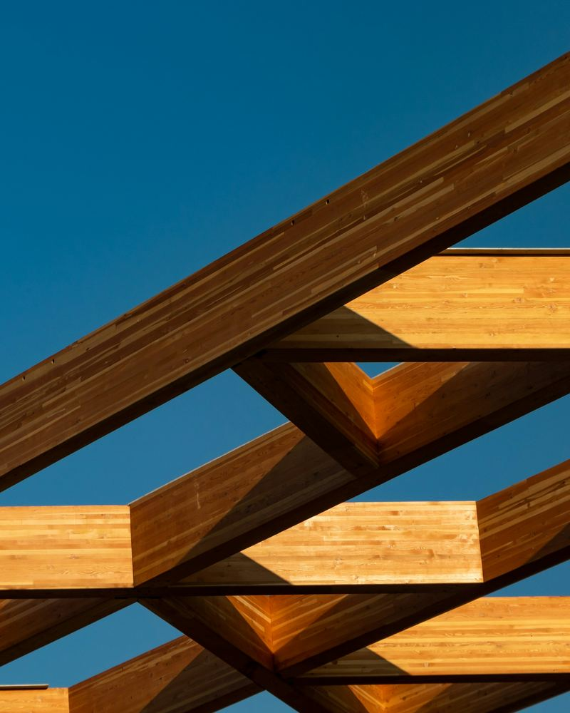

Kolik je to kubíků?
Zadejte rozměry a počet kusů. Spočítáme objem řeziva, a výpis nám pak pošlete jedním tlačítkem.
Co děláme
Od kulatiny po hotovou stavbu.
Řezivo a dřevo
Prkna, fošny, hranoly i dřevo na topení.

Zahradní posezení a chatky
Posezení, chatky a altány na zahradu.

Dřevostavby
Tesařské konstrukce a dřevostavby.

Ploty
Dřevěné ploty a brány.

Bednění schodišť
Dřevěné obklady a bednění schodišť.
Vybavení restaurací
Dřevěné vybavení restaurací na míru.
Co píšou zákazníci
„Neskutečně nápomocní, hořelo nám dřevo na druhý den. Neměli jej skladem, tak jej do druhého rána nařezali.“
zákazník na Firmy.cz
Rady z praxe
Všechny články
- Pila
- Sokolovská, Bílovec
- Otevřeno
- po–pá od 5:00, so 6–18
- Doprava
- materiál dovezeme